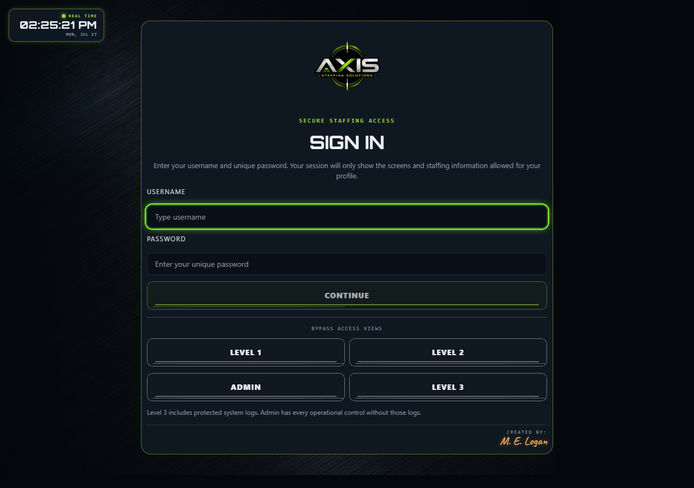

Controlled access
Role-specific entry points and protected staffing information.
Beta transmission / 004
Secure staffing access, operational clarity, and the right information for every role.
This product is now Axis Staffing Solutions. Its temporary beta address still contains the former Wheel of Destiny project name while infrastructure is migrated.

The idea
004 / AXAxis is a staffing operations environment built around a simple principle: every person should see the information and controls required for their role—no more, no less.
Tiered access, protected operational views, administrative controls, and system visibility give staffing teams a clearer, more deliberate command surface.
Role-specific entry points and protected staffing information.
Continue the Axis rebrand and harden day-to-day staffing workflows.
Give every level the right controls without unnecessary exposure.